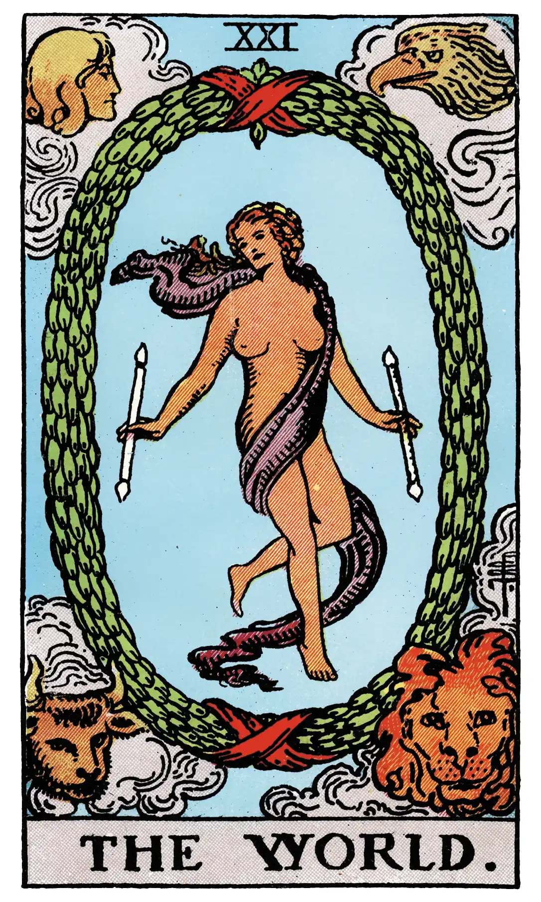

The World

A.E.W.
Upright
Assured success, recompense, voyage, route, emigration, flight, change of place.
Reversed
Inertia, fixity, stagnation, permanence.
S.L.M.M.
Upright
Completion, Good Reward
Reversed
Evil Reward, or Recompense.
Description
As this final message of the Major Trumps is unchanged--and indeed unchangeable--in respect of its design, it has been partly described already regarding its deeper sense. It represents also the perfection and end of the Cosmos, the secret which is within it, the rapture of the universe when it understands itself in God. It is further the state of the soul in the consciousness of Divine Vision, reflected from the self-knowing spirit. But these meanings are without prejudice to that which I have said concerning it on the material side.
It has more than one message on the macrocosmic side and is, for example, the state of the restored world when the law of manifestation shall have been carried to the highest degree of natural perfection. But it is perhaps more especially a story of the past, referring to that day when all was declared to be good, when the morning stars sang together and all the Sons of God shouted for joy. One of the worst explanations concerning it is that the figure symbolizes the Magus when he has reached the highest degree of initiation; another account says that it represents the absolute, which is ridiculous. The figure has been said to stand for Truth, which is, however, more properly allocated to the seventeenth card. Lastly, it has been called the Crown of the Magi.
Additionally
The four living creatures of the Apocalypse and Ezekiel's vision, attributed to the evangelists in Christian symbolism, are grouped about an elliptic garland, as if it were a chain of flowers intended to symbolize all sensible things; within this garland there is the figure of a woman, whom the wind has girt about the loins with a light scarf, and this is all her vesture. She is in the act of dancing, and has a wand in either hand. It is eloquent as an image of the swirl of the sensitive life, of joy attained in the body, of the soul's intoxication in the earthly paradise, but still guarded by the Divine Watchers, as if by the powers and the graces of the Holy Name, Tetragammaton, JVHV--those four ineffable letters which are sometimes attributed to the mystical beasts. Eliphas Levi calls the garland a crown, and reports that the figure represents Truth. Dr. Papus connects it with the Absolute and the realization of the Great Work; for yet others it is a symbol of humanity and the eternal reward of a life that has been spent well. It should be noted that in the four quarters of the garland there are four flowers distinctively marked. According to P. Christian, the garland should be formed of roses, and this is the kind of chain which Eliphas Levi says is less easily broken than a chain of iron. Perhaps by antithesis, but for the same reason, the iron crown of Peter may he more lightly on the heads of sovereign pontiffs than the crown of gold on kings.